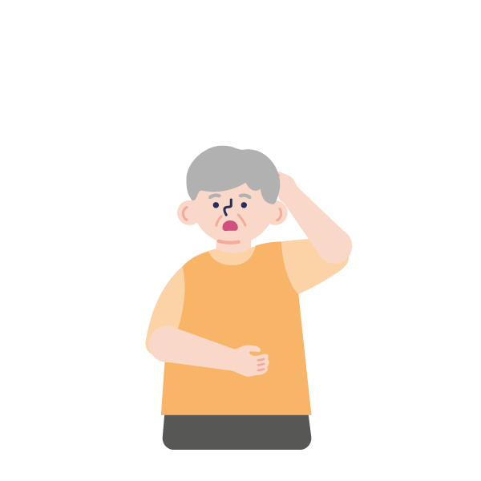
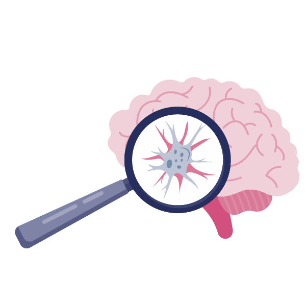
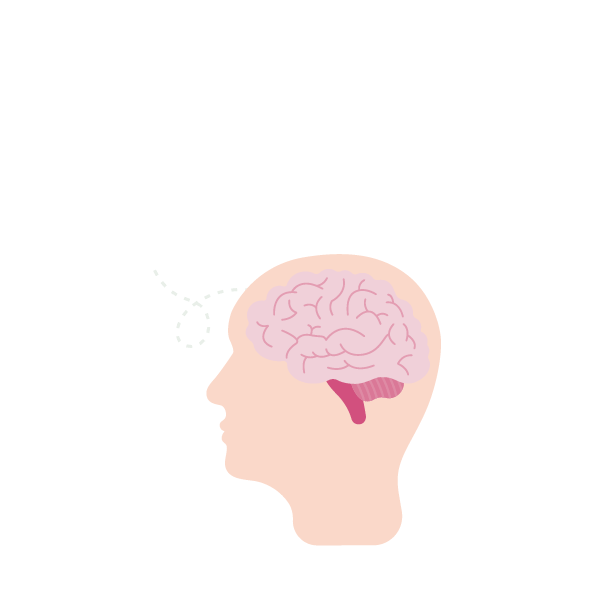
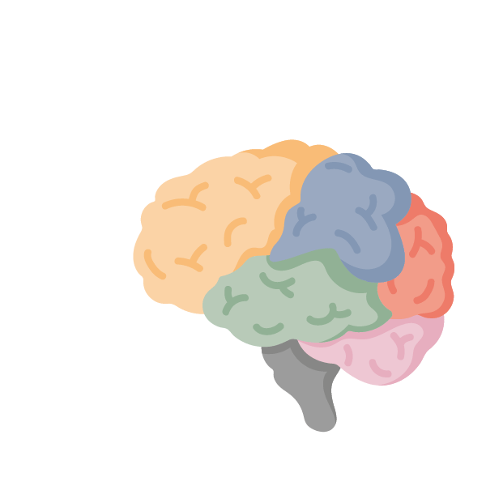
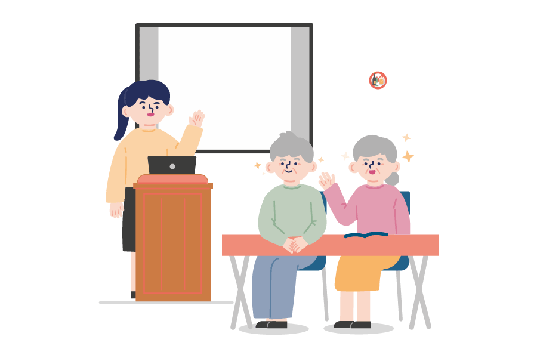
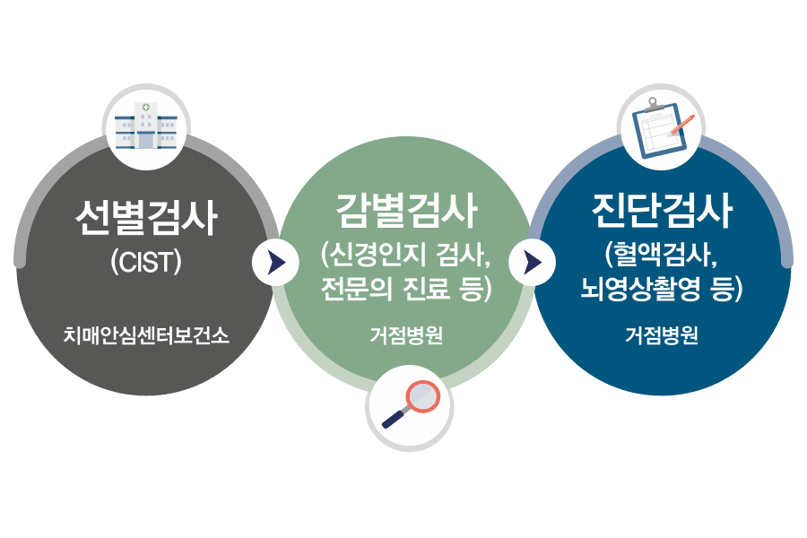
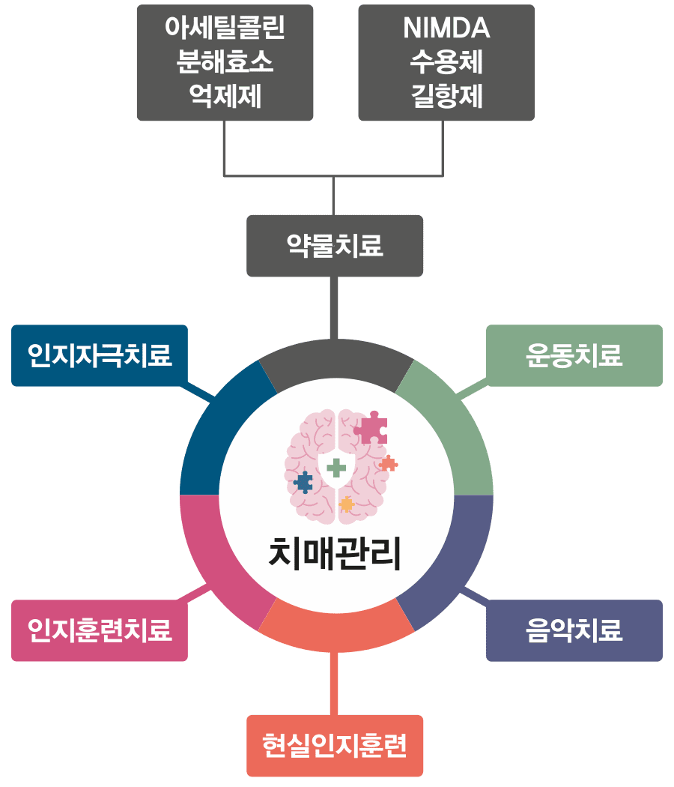

치매는 후천적인 외상이나 질병 등 외인에 의해 뇌세포가 손상 또는 파괴되어 전반적으로 지능, 학습, 언어 등의 인지기능과 정신 기능이 떨어지는 복합적인 증상을 말합니다.
자연적인 노화 현상으로 많이 발생한다고 알려져 있습니다.

건강하게 잘 지내야 하는 뇌세포들이 뇌 안에서 살기 어려워 빨리 사멸하는 퇴행성 치매입니다.
알츠하이머 치매와 파킨슨 치매가 이에 해당합니다.

뇌세포는 건강한데 다른 여러 가지 원인에 의해 뇌세포가 자기 뜻과는 상관없이 사멸하는 경우를 말합니다.
혈관성 치매, 뇌종양에 의한 치매 등이 있습니다.

뇌세포와 뇌혈관은 건강한데 주위 환경이 나빠져 발생하는 치매입니다.
알코올을 많이 섭취해서 생기는 알코올성 치매나, 약물 과다 복용 혹은 염증에 의한 치매가 이에 해당합니다.

이렇듯 다양한 치매의 원인을 제거한다면 치매를 치료할 수도 있지 않을까요?
알코올성 치매는 다른 치매와 달리 환자가 술을 끊고 6개월이 지나면 정상으로 회복될 수 있습니다.
단, 알코올성 치매가 이미 많이 진행된 상태에서는 회복되는 데 한계가 있기 때문에 조기 검진과 치료가 무엇보다 중요합니다.

치매는 일찍 발견하여 중증으로 진행되는 속도를 늦추는 것이 중요한 질병입니다.
치매 가족력이 있거나 걱정이 된다면 지역 치매안심센터를 방문하여 선별검사를 받을 수 있습니다.
만 60세 이상이라면 무료로 받을 수 있습니다.
 감별검사(신경인지 검사,전문의 진료 등)거점병원 > 진단검사(혈액검사, 뇌 영상촬영 등) 거점병원"
data-animation-type="onscroll"
data-animation-infos="style-bf-ani: 'opacity:0', style-af-ani: 'opacity:1'">
또한 치매 치료는 현재의 기능을 극대화하고 최대한 오래 보존하기 위해 다양한 분야 최적의 치료를 접목하는 통합적 접근을 원칙으로 하고 있습니다.
이에 따라 약물 치료를 기본으로 인지 재활 등 비약물 치료를 병행하게 됩니다.

치매는 돌봄과 치료가 함께 요구되는 질병이기에, 장기간의 돌봄과 치료에 필요한 경제적 준비가 필요합니다.